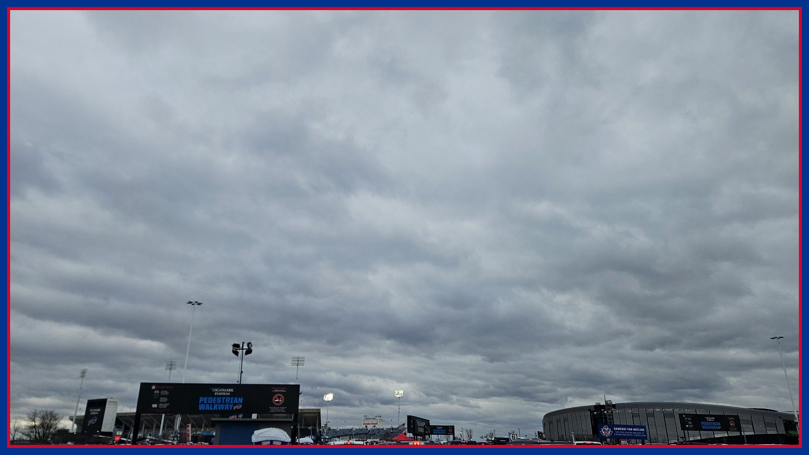

The Card: Buffalo is favored by 16.5 over Miami, the total keeps falling, and Saturday changed the defense
Buffalo is a 16.5-point favorite over Miami today (1 PM ET, Highmark Stadium, CBS), a spread that has not moved all week, per The Sharp Edition — while the total has fallen from 46.5 to 44.5 in the wind. Saturday elevated Tre'Davious White and Shaq Thompson and added Ed Oliver (oblique) as questionable. The Card prices what actually changed.

Welcome back to The Card — I'm Matt Manzella, and this is the one desk on this site where we talk about the numbers that move money. This is Partner Content, presented by Kalshi, the regulated exchange where you trade on game outcomes instead of betting against a house. The rule here has not changed since this desk opened: every number below traces to a named source, every position gets logged in public, and there are no locks and no guarantees. Today's game is the Miami Dolphins (1-8) at the Buffalo Bills (8-1), Sunday, Nov. 22 at 1 PM ET at Highmark Stadium on CBS — and the most honest price in this matchup is not the spread. It is the total, and it has been falling all week.
Start with the headline prices. The consensus spread has not moved: Buffalo -16.5, unchanged since tracking began Wednesday, per The Sharp Edition's Sunday-morning update, with Kalshi listing the same -16.5 spread, a 45 total and a Buffalo win price implying about a 91.5 percent chance on Sunday morning, per the same update. The sportsbook total sits at 44.5, per Action Network and BetMGM listings checked this morning — down from an open of 46.5, per The Sharp Edition, and some previews put the open as high as 47. A two-point fall in a total with no move in the spread is the market telling a specific story: it still believes Buffalo wins big, but it no longer believes this game gets played in a track meet. The forecast is part of it — wind at 14 miles per hour, gusting to 23, at Highmark Stadium, per The Sharp Edition's kickoff forecast, with the total dropping two points as that forecast firmed up.
Saturday then changed the defense that has to protect that margin. Buffalo elevated cornerback Tre'Davious White and linebacker Shaq Thompson from the practice squad on Saturday, per the Democrat and Chronicle — two former first-round picks called up because cornerback Christian Benford (groin) and linebacker Dorian Williams (calf) were ruled out Friday after missing all three practices, per the same reporting. Rookie Kaleb Elarms-Orr is expected to make his first NFL start in place of Williams, and Buffalo could start rookie Davison Igbinosun and second-year corner Maxwell Hairston outside with Benford sidelined, per the Democrat and Chronicle. White and Thompson could see their first action of the season. That is real depth, and it is also real inexperience in the starting group in front of it — against a 1-8 team, that trade favors Buffalo. Against a 16.5-point spread, every communication mistake is a backdoor waiting to open.
Saturday added one more name, and it is the swing name on the whole card. Defensive tackle Ed Oliver was added to Buffalo's injury report on Saturday with an oblique injury and listed as questionable, per the Democrat and Chronicle — one day after he finished the practice week with no designation at all. Buffalo will announce its inactives about 90 minutes before kickoff, and Oliver's status is now the last word on this game. If he plays, Buffalo's interior faces a Miami line that may be without its starting center — Aaron Brewer is questionable as he finishes the concussion protocol, per the Dolphins' report via the Democrat and Chronicle — with its run game already thinned by De'Von Achane's season-ending injury. If Oliver sits, Miami's only real path, keeping quarterback Kyle McCord out of third-and-long behind running back Ollie Gordon II, gets a little wider. Tight end Dalton Kincaid (thumb and ankle) remains doubtful after missing all week, and safety Damar Hamlin, tight end Jackson Hawes and defensive tackle T.J. Sanders are questionable, per the Democrat and Chronicle's Sunday update; nickel corner Dee Alford cleared the concussion protocol, practiced fully Friday and carries no designation.
The matchup the price is built on is still the ground game, and the grades say it is not close. James Cook has 971 rushing yards at 5.2 yards per carry with nine touchdowns, per Athlon Sports, and he ran for 157 yards against the Jets last week while chasing a piece of history this site's Film Room detailed Friday: 75 rushing yards and a touchdown today would be his ninth straight game hitting both marks, alone in second place in NFL history. Miami's interior is gone — Zach Sieler lost for the season, and Zeek Biggers and Jordan Phillips placed on injured reserve this week, per the Democrat and Chronicle — and Indianapolis ran for 172 yards on the Dolphins last week before those moves, per Athlon. Buffalo averages 152.7 rushing yards per game, second in the league, per Athlon. The one Dolphin who can wreck a drive is edge rusher Chop Robinson: a 79.9 PFF pass-rush grade, eighth among 111 qualifiers, and a 19.9 percent pressure rate that leads all edge rushers, per TruMedia via Athlon — but his run-defense grade is 50.8, per the same reporting, and Buffalo is going to run at him. On the other side, Greg Rousseau has 53 pressures on 296 pass-rush snaps, per PFF via Athlon, and rookie T.J. Parker piled up five pressures on 26 pass-rush snaps against the Jets, per PFF via FanRecap — a lot of heat for a quarterback making his second career start.
So why is the total falling if Buffalo's offense is this good? Because the other prices are honest, too. Josh Allen carries an 82.3 PFF grade, seventh among 37 quarterbacks, per PFF — and he has also thrown an interception in each of his last three games, seven on the season, per ESPN via Athlon, with Miami rookie cornerback Chris Johnson, one of two Dolphins rookies in PFF's top 15, coming off a pick-six in Indianapolis, per Athlon. Buffalo's defense has not allowed a touchdown in 33 consecutive drives and has given up 28 points total across its last three games, per the Bills' official recap reporting this week. And hanging over all of it is the calendar: Kansas City arrives on Thanksgiving night, four days from now. A Buffalo team up three scores in the fourth quarter has every reason to hand the ball off, drain the clock and get Cook and Allen to Thursday healthy. That is how favorites win comfortably and totals stay under — and how 16.5-point spreads die by a late, meaningless Miami touchdown.
Here is my card for today, in order. One: Buffalo to win is the only moneyline lean, but at a price implying better than 90 percent on Kalshi there is no edge in chasing it — the market already believes, so I am not paying full price to agree with it. Two: the spread at -16.5 is a pass until inactives. If Oliver is active, the case for a comfortable cover is real; if he is out, with two rookie outside corners and a rookie starting at linebacker, 16.5 is a number I respect too much to lay. Three: the total is my lean — under 44.5 at the books, around the 45 line on Kalshi — on the wind, on a falling market, on a defense riding a 33-drive touchdown-less streak, and on a short-week incentive to shorten this game the moment it is in hand. The expert score predictions collected by the Palm Beach Post — Buffalo 28-13, 30-15 and 31-19 — all land in that same neighborhood: a clear Buffalo win that does not need a shootout to happen. Trade the inactives, not the rumors.
The Card is Partner Content presented by Kalshi. Trade this game and every game at kalshi.com/r/BNC — free $55 when you trade $25, code BNC. You must be 18 or older to trade on Kalshi. Prices move, nothing in this column is a guarantee, and this is analysis and entertainment, not financial advice. Trade only what you can afford to lose. Sunday's inactives, about 90 minutes before the 1 PM ET kickoff, are the last word on Oliver, Hamlin, Hawes and Sanders — everything above is priced to change when they post. Go Bills — and get today's inactives and the full Dolphins fallout in your inbox with The BNC Blitz.
The BNC Blitz is free: the day's Bills news, one stat that matters, and one take, every morning. Join to keep reading — and never miss the end of a story again.